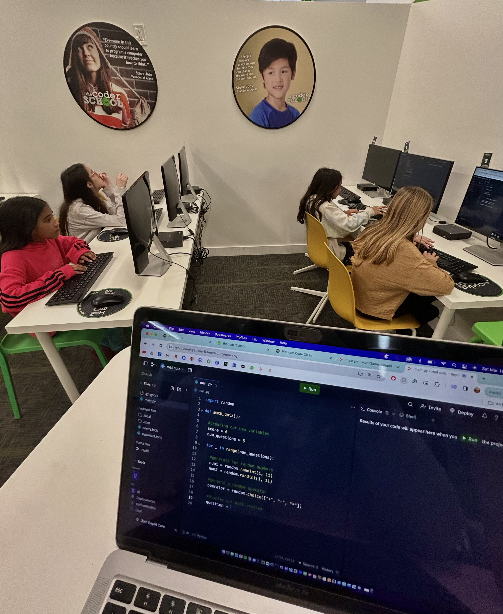

Code Coach
theCoderSchool
As a Code Coach, I taught children aged 5 to 18 in various programming languages, including Java, Python, and Scratch. I managed class sizes ranging from one-on-one sessions to groups of up to 15 students. This role required me to take responsibility for young learners and ensure parental satisfaction. I found immense joy in knowing that I made a difference in children's lives, fostering their interest in programming.